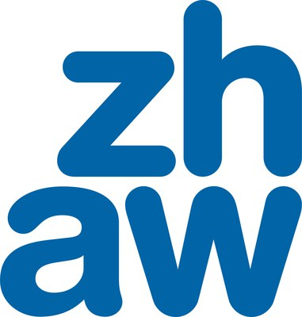

Research Areas
- Home
- About
- Research Area
Human-Centered AI for Real-World Impact
HAI Lab OverviewAI × Human-Computer Interaction
AI × Human-Computer Interaction
for a Better Tomorrow
HAI Lab integrates Artificial Intelligence (AI) and Human-Computer Interaction (HCI) to develop human-centered intelligent systems. We build AI systems that understand people and the physical world, collaborate with humans, and augment human capabilities. Our research spans Agentic AI, Physical AI, and AI for Social Good, connecting advances in AI with meaningful real-world impact.
- UnderstandPeople and the physical world
- CollaborateWith humans
- AugmentHuman capabilities
01
Agentic AI
AI systems that reason, act, and collaborate with humans.
Selected ProjectsView all projects
 OngoingPublic–Private R&DDevelopment of Expert-Context-Based Multi-Agent AI for Automated Digital Accessibility Diagnosis and UI GenerationAutomated accessibility diagnosis and UI generation with expert-context multi-agent AI.
OngoingPublic–Private R&DDevelopment of Expert-Context-Based Multi-Agent AI for Automated Digital Accessibility Diagnosis and UI GenerationAutomated accessibility diagnosis and UI generation with expert-context multi-agent AI. Ongoingi-SENSDevelopment of an Organize–Monitor–Analyze AI Agent for Automated Quality Management of Measurement Data on Prepared Blood, Clinical, and Control SolutionAn organize–monitor–analyze agent for automated quality control of measurement data.
Ongoingi-SENSDevelopment of an Organize–Monitor–Analyze AI Agent for Automated Quality Management of Measurement Data on Prepared Blood, Clinical, and Control SolutionAn organize–monitor–analyze agent for automated quality control of measurement data.Selected PublicationsView all publications
02
Physical AI
AI systems that perceive, understand, and interact with the physical world.
Selected ProjectsView all projects
 OngoingMSITDevelopment of Core Technologies for Expandable Vision-Language-Action (VLA) Models on Distributed GPUsA 70B-scale expandable vision-language-action foundation model on aggregated distributed GPUs.
OngoingMSITDevelopment of Core Technologies for Expandable Vision-Language-Action (VLA) Models on Distributed GPUsA 70B-scale expandable vision-language-action foundation model on aggregated distributed GPUs. OngoingRISEDevelopment of Vision-Language-Action Agentic AI for User Behavior-Driven UI/UX EvaluationAgentic vision-language-action models that evaluate UI/UX from user behavior.
OngoingRISEDevelopment of Vision-Language-Action Agentic AI for User Behavior-Driven UI/UX EvaluationAgentic vision-language-action models that evaluate UI/UX from user behavior.Selected PublicationsView all publications
03
AI for Social Good
Applying AI to real-world challenges for a more inclusive and sustainable society.
Selected ProjectsView all projects
 OngoingMOTIEOn-Device AI-Based Self-Guided Hemorrhage Management System for Vascular Intervention using Vascular Image DataReal-time on-device AI for self-guided hemorrhage management in vascular intervention.
OngoingMOTIEOn-Device AI-Based Self-Guided Hemorrhage Management System for Vascular Intervention using Vascular Image DataReal-time on-device AI for self-guided hemorrhage management in vascular intervention. OngoingTutorus LabsUsability Evaluation of a Compound AI Tutoring SystemUsability evaluation of a compound AI tutoring system built on LLMs and multimodal data.
OngoingTutorus LabsUsability Evaluation of a Compound AI Tutoring SystemUsability evaluation of a compound AI tutoring system built on LLMs and multimodal data.Selected PublicationsView all publications
Our Partners
Working with Leading Partners
We collaborate with experts across healthcare, education, industry, government, and global academia.


